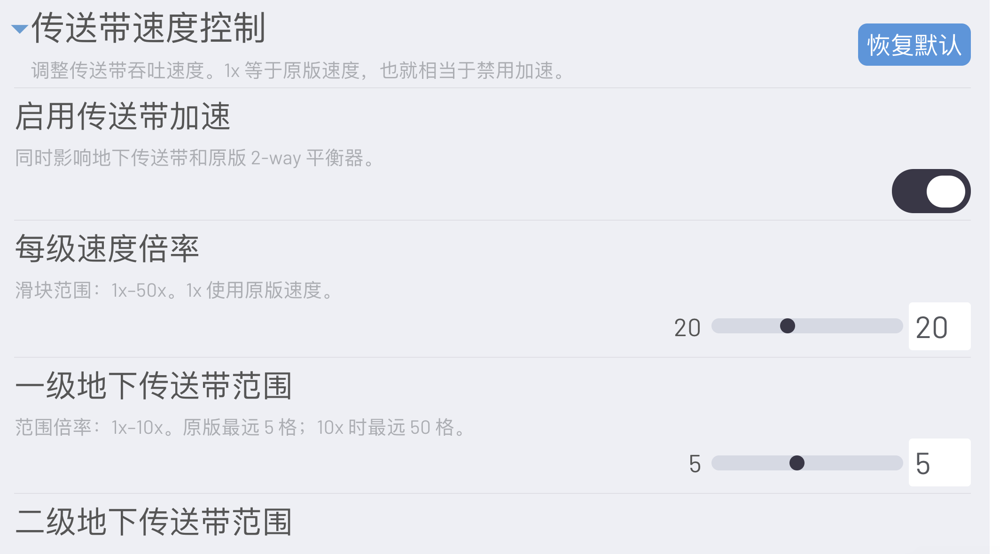
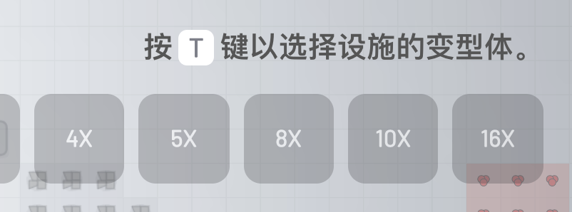
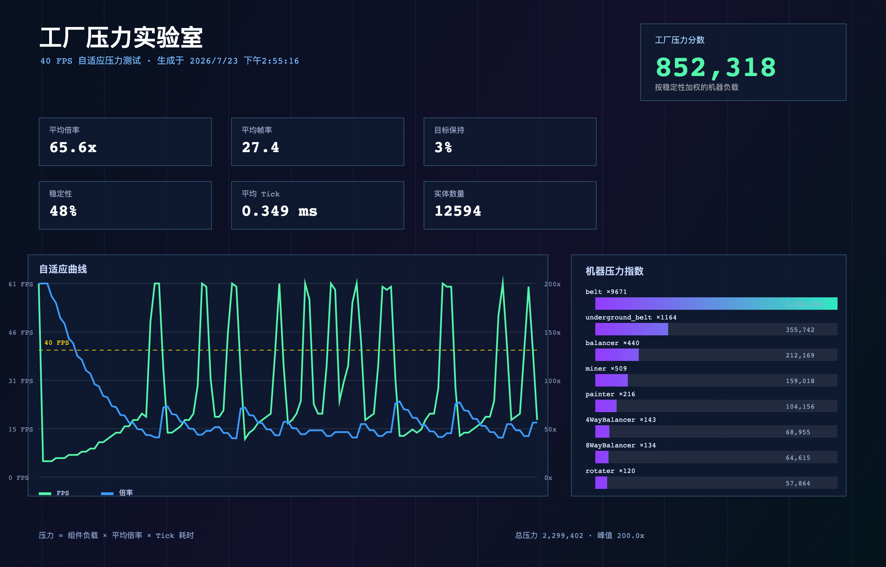
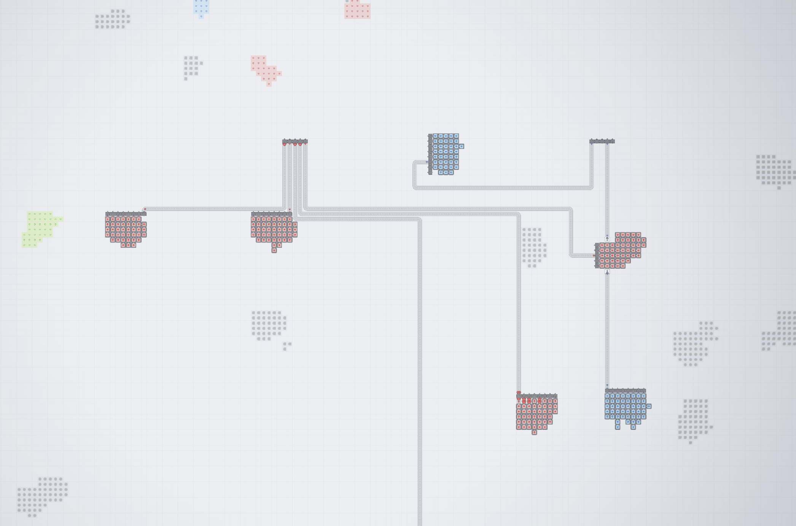

Community collection · Shapez 1.x
让工厂的物流、建造与性能测试更顺手。
一套面向 shapez.io 一代的中文 Mod 整合：高吞吐物流、多向平衡器、原生设置页、快捷建造、地图预览与自适应压力测试。
按需组合，而不是一键强绑。
每个 Mod 都是单文件，可独立启用。带设置项的 Mod 会自动接入统一的“游戏模组（MODS）”页面。
Structured Mod Settings UI
在游戏原生设置中新增 MODS 分类，统一保存其他 Mod 的结构化配置。
查看介绍 → 物流Belt Speed Control
传送带 1–50× 调速，地下传送带距离独立设置，并同步原版平衡器与读取器。
查看介绍 → 物流Balancer Variants
为原版平衡器加入 4 / 5 / 8 / 10 / 16 路变形体，不增加工具栏格子。
查看介绍 → 建造Key Reform
T + 数字键、T/R + 滚轮，让变形体和朝向切换变成连续操作。
查看介绍 → 视图Zoom out before Mapmode
扩大进入地图总览前的缩放范围，并在远视角简化传送带渲染。
查看介绍 → 性能Factory Stress Lab
无上限模拟倍率、40 FPS 自适应 Benchmark、性能曲线和多格式报告。
查看介绍 → 建造Auto Tunnels
方向锁定铺传送带时，自动尝试用地下传送带跨越既有物流。
查看介绍 → 建造Chainable Extractors
拖动建造链式采矿机时，连续放置并根据拖动方向调整朝向。
查看介绍 → 测试Sandbox
全部科技奖励解锁、蓝图成本为零，适合布局验证和性能压测。
查看介绍 →从建厂到压测的一条工作流
- 日常建造：Balancer Variants + Key Reform
- 高吞吐验证：Belt Speed Control + Auto Tunnels
- 远景规划：Structured Settings + Zoom out before Mapmode
- 性能对比：Factory Stress Lab + Sandbox
运行期增强
主要维护 Mod 标记为不影响存档：它们修改的是运行时行为、设置界面或绘制方式。Sandbox 会改变正常进度的解锁状态，推荐用于独立测试档。
游戏内实机截图
展示统一设置页、扩展平衡器、远距离地图预览与 Factory Stress Lab 的报告输出。




安装只需要三步。
整合包内的每个 JS 文件均可以单独复制到游戏的 Mod 目录中。
下载 ZIP 整合包，解压后进入其中的 mods/ 目录。
将需要的 .js 文件复制到 shapez.io 的 Mod 目录。macOS 常用路径为 ~/Library/Preferences/shapez.io/mods/。
重启游戏后在 Mod 管理界面启用。需要调参数时，打开「设置 → 游戏模组（MODS）」。